Overview
The Custom Case List is a feature designed to allow users to customize the content that is available in their case list. Using this feature, the columns in the case list can be customized to display information from Dynaform fields and case variables that are stored in report tables. New columns can be added to the Inbox, Draft, Participated, Unassigned, Pause or Cancelled filters. Moreover, it is also possible to change the labels and alignment of the columns.
The Custom Case List has the same behavior as in the Tasks list when searching cases, in the cases view, and in the Detail Case, which the last one is important for tracking cases. The search filter in a list has an automatic save per user, then, the searching criteria remains through navigation until it is changed or removed.
An example of a customized case list is shown in the following image:
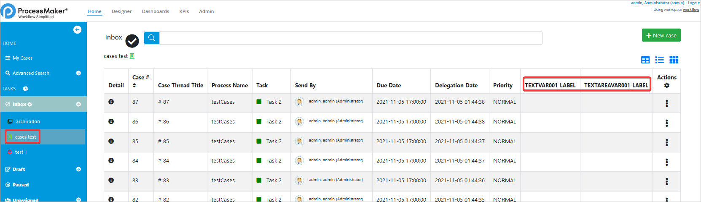Considerations
Take into account the following considerations before using Custom Case List.
- Custom Case List is not available in ProcessMaker 3.6.x. Then, the old Custom Case List Builder that works till ProcessMaker 3.5.x does not migrate its settings to the current Custom Cases List in ProcessMaker 3.7.x because it is different on its internal structure. Therefore, the Business Designer has to set new Custom Case List settings in the new user interface for ProcessMaker 3.7.x.
Additionally, due to the new user interface, case variables in custom case lists are just available from Report Tables not from PM tables. - Pagination is only available in the Grid view but not in the List nor the Card View.
- When searching cases, the By Process Category and By Process Name filters are not functional because the Custom Case List is for specific processes.
- The Custom Case List does not update automatically after creating a case. Alternative, click the list to update your case list.
Requirements
- ProcessMaker version 3.7.0 or higher.
Supported Stacks
The stacks supported by this feature are the same as those supported in ProcessMaker version 3.7.x. See this documentation to view the stacks supported by ProcessMaker.
Browser Compatibility
The browsers supported by this feature are the same as the features supported by ProcessMaker version 3.7.x. To view the browsers supported, check the following documentation.
Note: For the moment, the Custom Case List feature does not work on Solr Servers.
Access Creation Interface
After installing ProcessMaker, the Custom Case List should be available for use without any additional configuration.
Go to Admin > Settings to access the Custom Case Lists option in the left panel:
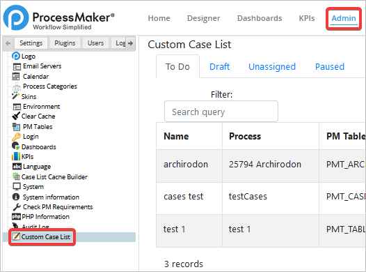A list of columns in the case list will be displayed:
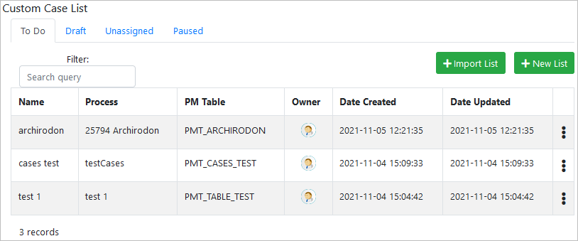Custom Case List Creation Interface
In the tabs at the top, select which case inbox to customize: To Do, Draft, Unassigned or Paused. Each case inbox has individual configurations.

Under these tabs, find the following options (the use of each one is described in the later sections):
-
Filter: Search within the current inbox list for keywords to filter the list of specific custom cases.
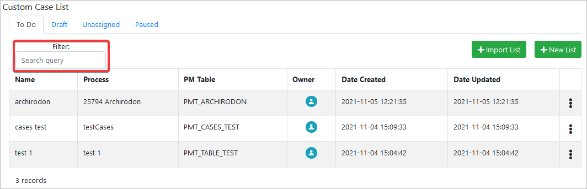 -
Import List: Click to import and then select a
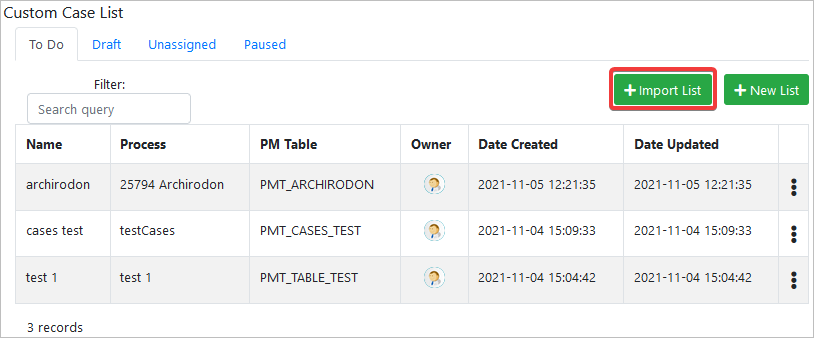.jsonfile containing a custom case list configuration. -
New List: Click to add and then configure a new custom case list configuration.
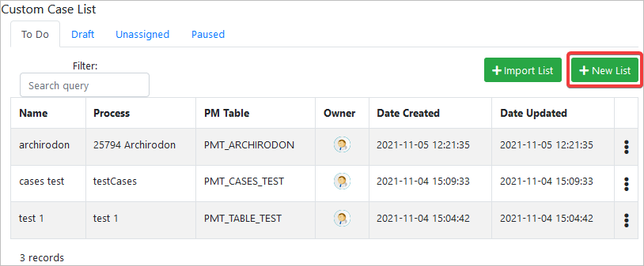 -
Edit List: Put the mouse over the dots, and then options to edit the custom case row appear.
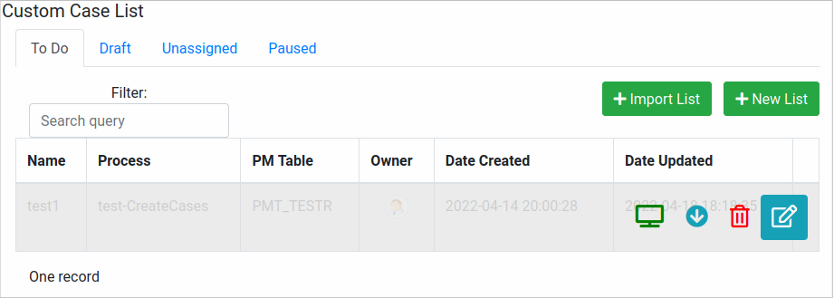
Filtering A List
To filter a list, follow these steps:
-
Type a keyword to search within the custom cases configured list.
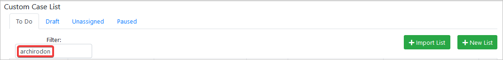 -
Automatically the list updates and the matching records appear.
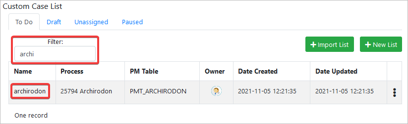
Importing A List
To import a list, follow these steps:
-
Click on the + Import List button.
-
The Import Custom Case List pop-up window opens.
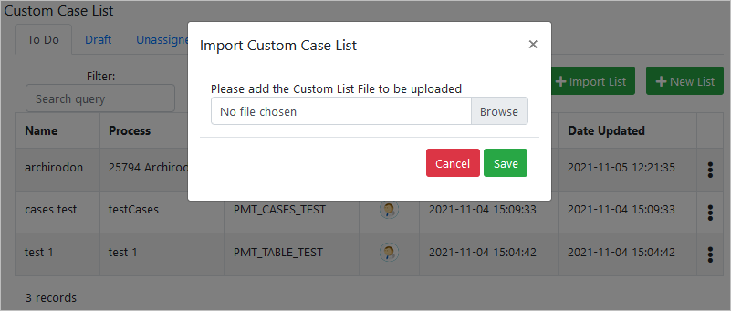 -
In the Import Custom Case List pop-up window, click Browse and then select a valid .json file.

-
Click the Save button.

-
The file imports successfully.
Creating A New List
To create a new list, follow these steps:
-
Select a Task list from which to customize a list by clicking some of the tabs: To Do, Draft, Unassigned, or Paused.
-
Click the + New List button.
The New Case List window displays.
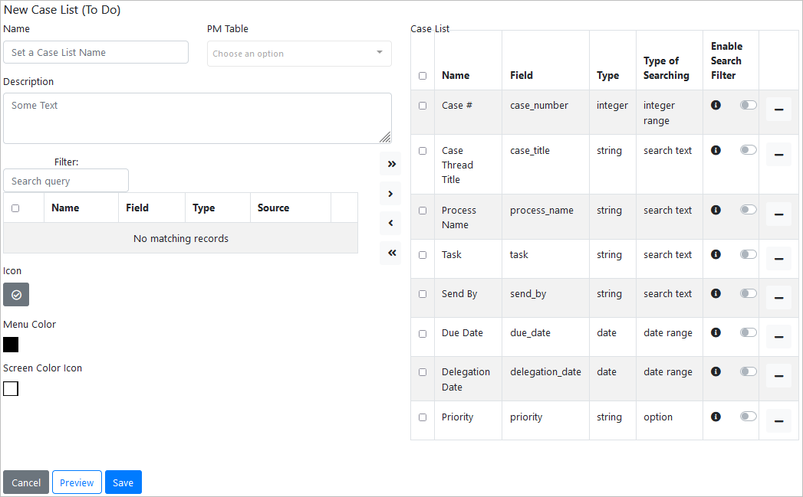 -
Enter the Name, the Description, and then type and select a Report Table.
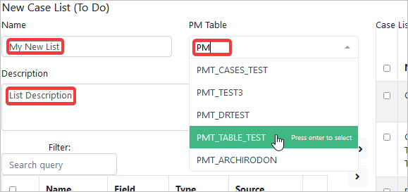 The left-panel lists the Report Table's data. Check the desired data on this panel to be added to the custom list, and then click the left arrow icon in the middle.
Note: All the columns could be moved with the double left-arrow.
-
The right-panel lists all the data displayed in the selected Task list, in this example Inbox (To Do). Check the desired data on the right to be removed from the custom Task list, and then click the right-arrow icon in the middle.
Note: All the columns could be moved with the double right-arrow.

As of ProcessMaker 3.7.7 if desired, order your custom case list easily by using the drag and drop feature. This order is reproduced in the Task list interface.

-
Select an Icon, a Menu Color and then a Screen Color Icon.
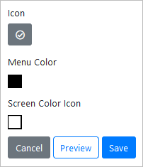 -
Click the Save button.
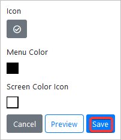The list creates successfully.
Note: If setting columns while the custom case list in the Home is open, refresh the Home to see results.
Custom Case List Options
To see the list optins, follow these steps:
-
Select a Task list from which to edit the custom list by clicking some of the tabs: To Do, Draft, Unassigned, or Paused.
-
Put the mouse over the dots, and then options to edit the custom case row appear.
-
The first option displays (Screen Icon) a pop-up window with the preview of the list.
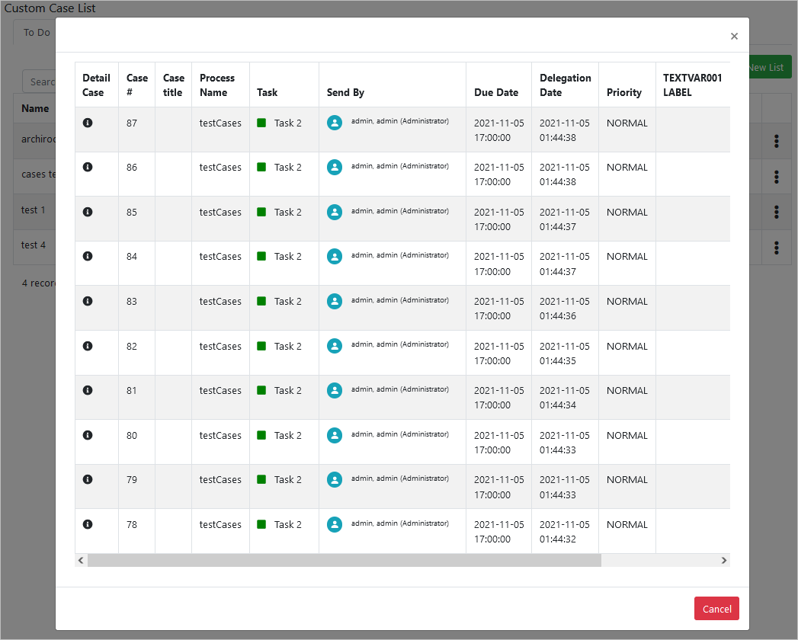 -
The second option (Download Icon) exports a .json file with the configuration of the list.
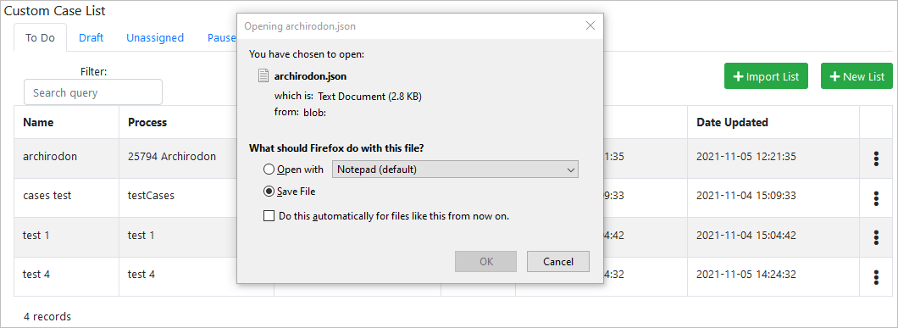 -
The third option (Edit Icon) opens a window to edit the configuration of the list. Edit your list as when you are creating a new list
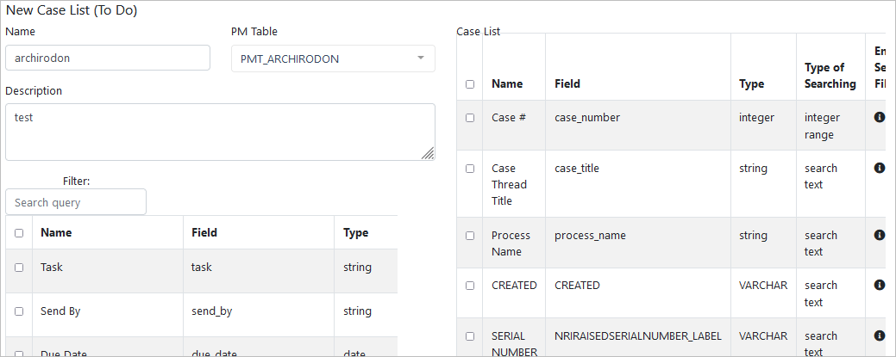 -
The fourth option (Delete Icon) opens a pop-up window to confirm the removal of the list.
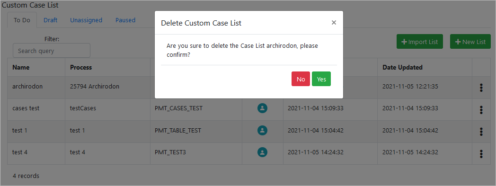